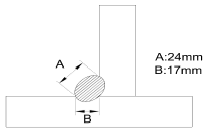
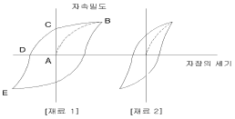
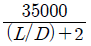
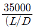
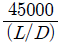
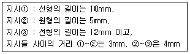

자기비파괴검사기사 (2014-03-02 기출문제)
1과목: 비파괴검사 개론
1. 홀 효과(hall effect)를 이용하는 비파괴 검사법은?
- 광탄성법
- 전위차시험법
- 형광 서머그래피법
- 누설자속탐상검사
(정답률: 66%)

2. 다음 비파괴검사 방법 중 결함의 형상을 추정하기 곤란한 검사방법은?
- 침투탐상검사
- 와전류탐상검사
- 방사선투과검사
- 자분탐상검사
(정답률: 71%)
3. 누설검사를 계획하거나 시방서를 작성할 때 이용할 누설 검사의 선택에서 가장 먼저 생각할 점은?
- 검사비용
- 설계압력
- 누설률의 범위
- 추적가스의 선택
(정답률: 58%)
4. 방사선투과시험에서 반가층이란?
- ×, γ선이 물질 후면으로 투과되어 나온 방사선의 강도가 투과되기 전 표면에서의 강도의 반이 되는 물질의 두께이다.
- 방사선과 물질과의 상호작용시 이온화 과정에 의한 흡수가 필름 안에서 일어나 이때의 자유전자들이 영상을 흐리게 하는 층을 말한다.
- 방사성 물질이 원래의 크기보다 반으로 줄어들 때의 구분선을 말한다.
- 방사선투과 사진의 질을 점검할 때 표준시험편을 사용하는 데 이의 등급 간의 분류를 말한다.
(정답률: 68%)
5. 초음파탐상시험의 장점이 아닌 것은?
- 결함의로부터의 지시를 곧바로 얻을 수 있다.
- 시험체의 한 면만을 이용하여 결함을 측정할 수 있다.
- 내부조직의 입도가 크고 기포가 많은 부품 등의 탐상에 유용하다.
- 침투력이 매우 높아 두꺼운 단면을 갖는 부품의 깊은 곳에 있는 결함도 용이하게 검출한다.
(정답률: 63%)
6. 충격시험에 대한 설명으로 옳은 것은?
- 충격시험은 정적하중시험이다.
- 강의 인성이나 취성을 알 수 있다.
- 충격시험은 재료에 내부 충격을 주어 피로현상을 측정한다.
- 충격값은 재료에 다중 충격을 주었을 때 발산되는 에너지로 나타낸다.
(정답률: 69%)
7. 철-탄소 평형상태도에서 공정반응의 온도로 옳은 것은?
- 723℃
- 910℃
- 1130℃
- 1538℃
(정답률: 35%)
8. WC 분말과 Co 분말을 압축성형한 후 약 1400℃로 소결시켜 바이트와 같은 공구에 이용되는 합금은?
- 초경합금
- 고속도강
- 두랄루민
- 엘렉트론합금
(정답률: 66%)
9. 단결정을 이용한 집적회로용 금속재료로 전자적 성능이 가장 좋은 원소는?
- S
- Si
- Pb
- Cu
(정답률: 68%)
10. 오스테나이트계 스테인리스강의 특성에 관한 설명 중 틀린것은?
- 내식성이 우수하다.
- 내충격성이 크다.
- 기계가공성이 좋다.
- 강자성이며, 인성이 좋다.
(정답률: 71%)
11. 일반적으로 특수강에 첨가되는 특수 원소의 효과에 대한 설명으로 틀린 것은?
- 질량효과 증대
- 담금성 향상
- 임계냉각속도 상승
- 마텐자이트 변태점 저하
(정답률: 47%)
12. 가장 높은 온도를 측정할 수 있는 열전대 재료는?
- 철-콘스탄탄
- 크로멜-알루엘
- 백금-백금ㆍ로듐
- 구리-콘스탄탄
(정답률: 47%)
13. Fe의 비중과 용융점으로 옳은 것은?
- 비중은 2.7이며, 용융점은 660℃이다
- 비중은 7.8이며, 용융점은 1538℃이다.
- 비중은 8.9이며, 용융점은 1083℃이다.
- 비중은 10.2이며, 용융점은 2610℃이다.
(정답률: 69%)
14. Cartrige brass에 대한 설명으로 틀린 것은?
- 가공용 황동이다.
- 70%Cu+30%Zn 황동이다.
- 판, 봉, 관, 선을 만든다.
- 금박대용으로 사용하며, 톰백이라고도 한다.
(정답률: 65%)
15. 다이캐스팅용 재료로 가장 적합한 것은?
- 주강
- 주철
- 특수강
- 아연 합금
(정답률: 59%)
16. 용접 비드의 가장자리에서 모재 쪽으로 발생하는 균열은?
- 루트 균열
- 토우 균열
- 비드 밑 균열
- 라멜라 티어
(정답률: 64%)
17. 그림과 같은 필릿 용접에서 용접부의 이론 목두께는 약 몇 mm인가?

- 12
- 14
- 17
- 24
(정답률: 46%)
18. 서브머지드 아크 용접의 특징에 대한 설명으로 옳은 것은?
- 용입이 낮다.
- 용융속도가 느리다.
- 용착속도가 느리다.
- 기계적 성질이 우수하다.
(정답률: 84%)
19. 저수소계 피복아크 용접봉의 건조온도 및 건조시간으로 다음 중 가장 적합한 것은?
- 100~150℃, 3~4시간
- 150~200℃, 2시간
- 200~300℃, 3시간
- 300~350℃, 1~2시간
(정답률: 53%)
20. 불활성가스 텅스텐 아크용접(TIG용접)에서 아크쏠림(Arc Blow 또는 Magnetic Blow) 현상이 일어나는 원인이 아닌것은?
- 자장 효과(magnetic effects)
- 용접 전류 조정이 너무 낮게 되었을 때
- 텅스텐 전극봉이 탄소에 의해 오염되었을 때
- 풋 컨트롤(foot control)장치로 전류를 감소시킬 때
(정답률: 52%)
2과목: 자기탐상검사 원리
21. 자화 케이블을 직접 시험체에 감아 코일법으로 검사한 경우 잘 나타나는 의사지시모양은?
- 단면급변지시
- 전류지시
- 전극지시
- 자극지시
(정답률: 68%)
22. 자분탐상시험시 중심도체법을 사용할 경우 자속밀도가 가장 높은 것은?
- 중심도체의 표면
- 중심도체의 주위
- 검사체의 내부표면
- 검사체 중심부
(정답률: 50%)
23. 다음 중 탈자를 하지 않고 재시험을 하여도 무방한 경우는?
- 자기 펜 흔적으로 의심되는 지시가 나타나 재검사하는 경우
- 국부적인 냉간 가공부에서 지시가 나타나 결함 여부를 확인하기 위하여 재검사하는 경우
- 국부적인 용접 보수 면에서 지시가 나타나 결함 여부를 확인하기 위하여 재검사하는 경우
- 자화전류의 계산이 잘못되어 초기 자화전류보다 높은 전류로 재검사하는 경우
(정답률: 70%)
24. 자기탐상시험에서 자기장이 균열의 방향과 수평으로 형성 될 때 어떤 결과가 나타나는가?
- 균열이 검출되지 않을 수 있다.
- 선명한 선형 지시가 나타난다.
- 지시가 퍼지는 형상이 발생한다.
- 작은 지시들이 나타난다.
(정답률: 79%)
25. 극간법 자분탐상시험의 설명으로 옳은 것은?
- 양자극을 연결하는 전기력선에 수직방향이 자속방향이다.
- 자극 가까운 부분이 가장 결함을 검출하기 쉽다.
- 자극사이를 멀리할수록 결함 걸출이 쉽다.
- 양자극을 연결하는 전기력선에 직교하는 결함이 가장 잘 검출된다.
(정답률: 55%)
26. 다음 중 무관련지시가 발생되는 이유로 적당하지 않은 것은?
- 용접부 융착금속과 모재의 경계
- 시험체 큰 단면의 급변부
- 금속조직의 경계
- 용전부의 오버랩(Over lap)
(정답률: 72%)
27. 자기탐상시험에서 잔류자장이 도움이 되는 경우는?
- 시험체의 자화
- 시험 후 탈자
- 지시의 해석과 평가
- 재시험 시
(정답률: 47%)
28. 다음 중 [재료 1]의 자기이력곡선에서 잔류자기를 나타내는 것은 어느 점인가?

- A
- D
- C
- E
(정답률: 56%)
29. 극간법 자분탐상시험의 설명으로 옳은 것은?
- 결함 검출능을 높이기 위해 직류를 사용한다.
- 자극과 시험체간 밀차도가 나쁠수록 불감대가 넓어진다.
- 인상력은 철심단면적의 크기와 극간 거리에 따른다.
- 시험면의 자계 강도는 AT(Ampere turn)로 나타낸다.
(정답률: 40%)
30. 납 또는 구리망사를 사용하여 전극의 접촉면이나 축통전법의 접촉면의 면적을 넓혀 주는 주된 이유는?
- 접촉면을 증가시키고 부품이 타는 것을 줄이기 위해
- 납과 구리는 용융점이 낮기 때문에
- 시편의 열발생을 돕고 자장유도를 쉽게 하기 때문에
- 접촉면과 자속밀도를 증가시키기 위해서
(정답률: 60%)
31. 다음 중 단조품의 자분탐상시험시 소성이 적은 변화에 의해 나타나는 판정 대상이 아닌 자분모양으로써 과도한 전류를 사용한 경우에 잘 나타나므로 자화전류를 낮추어 재시험하면 사라지는 자분모양은 무엇인가?
- 단류선(flow line)
- 편석지시(segregation indication)
- 국부냉간가공(local cold working)
- 개재물 지시(inclusion indication)
(정답률: 75%)
32. 자속밀도를 영(zero)으로 하기 위한 자화력을 무엇이라 하는가?
- 항자력(coercive force)
- 자기유도(magnetic inductance)
- 자기 저항(magnetic resistance)
- 포화 자화(saturation magnetization)
(정답률: 78%)
33. 영구자석에서 자속선 또는 자력선을 설명한 것은?
- 자석내에 S극에서 N극으로 흐르는 자력의 흐름
- 자화전류에서 60번/초의 방향을 전환하는 것을 의미
- N극에서 나와서 S극으로 들어가는 자력흐름의 가상선
- 어떤 경우이든 선형자장을 나타냄
(정답률: 76%)
34. 외경 50mm인 운통형 시험체의 원주방향 결함을 검출하는 데 적합한 자분탐상시험의 자화 방법은?
- 축통전법
- 프로드법
- 전류관통법
- 코일법
(정답률: 49%)
35. 석유저장 탱크나 구형 탱크와 같은 대형구조물의 용접부균열 등의 불연속을 탐상하기 위하여 널리 사용되는 자분 탐상 검사방법은?
- 축통전법
- 코일법
- 극간법
- 중심도체법
(정답률: 79%)
36. 자계의 세기가 1000A/m에서 자속밀도 0.1 Wb/m2 인 자성체의 투자율[H/m]은 얼마인가?
- 10-3
- 10-4
- 103
- 104
(정답률: 66%)
37. 의사모양의 판별에 관한 내용으로 자분탐상시험만으로는 판별이 어려워 표면 연마 후 약품으로 부식시켜 금속 현미경 등의 미시적 시험 또는 거시적 시험으로 조사해야 하며 재시험은 침투탐상시험 등 다른 방법으로 확인해야 하는 의사모양은 다음 중 어느 것인가?
- 자기펜 자국
- 단면급변지시
- 표면거칠기지시
- 투자율이 다른 재질경계 지시
(정답률: 52%)
38. 자분탐상시험에서 작업안전과 관련하여 주의할 내용과 거리가 가장 먼 것은?
- 시험체에 전기 아크가 발생되지 않도록 주의한다.
- 습식자분의 오일 등 용매가 장시간 피부에 접촉되지 않도록 주의한다.
- 자외선 등에서 나오는 자외선이 직접 눈에 조사되지 않도록 주의한다.
- 자분의 비산 등을 확인하기 위해 작업자에게 TLD를 부착토록 조치한다.
(정답률: 76%)
39. 건식법에 의한 자분탐상시험의 설명으로 잘못된 것은?
- 자분 및 검사면이 충분히 건조되어 있어야 한다.
- 습식법에 비하여 표면결함의 검출 능력이 우수하다.
- 극단적으로 거친 면 및 고온부 탐상에 적합하다.
- 자분적용시 자분을 포대에 넣고 손으로 포대를 살살 쳐서 뿌려도 된다.
(정답률: 74%)
40. 강자성 물질의 시험체에 자화력을 계속 증가시켜도 자계의 세기가 더 증가하지 않는다면 이 때의 현상을 설명한 것으로 옳은 것은?
- 잔류자기를 가진 것을 나타낸다.
- 자기적으로 포화되었다.
- 항자력이 최대양을 나타낸다.
- 보자성이 최소임을 나타낸다.
(정답률: 69%)
3과목: 자기탐상검사 시험
41. 습식자분의 점도(Viscosity)는 38ﾟC(100ﾟF)에서 몇 Centistokes를 초과해서는 안되는가?
- 1
- 5
- 10
- 15
(정답률: 42%)
42. 탄소함유량이 높은 공구강과 스프링강 등 보자력이 높고, 특히 나사부 등 복잡한 형상부에 적용되는 자분탐상시험 방법은?
- 연속법
- 잔류법
- 직각통전법
- 전류관통법
(정답률: 54%)
43. 잔류법으로 검사할 때 가장 많이 검출되는 무관련지시는?(오류 신고가 접수된 문제입니다. 반드시 정답과 해설을 확인하시기 바랍니다.)
- 자극지시
- 자기펜흔적
- 재질경계지시
- 단면급변지시
(정답률: 23%)
44. 거친 단조품의 자분탐상검사에서 쉽게 발견될 수 있는 결함은?
- 피로 균열
- 열처리 균열
- Forging laps
- 그라인딩 균열
(정답률: 52%)
45. 코일법으로 자화할 때 고탄소강과 저탄소강의 시험체에 적용하는 전류 크기를 비교한 것으로 옳은 것은?
- 고탄소강 시험체는 저탄소강 시험체보다 적은 전류를 적용한다.
- 고탄소강 시험체는 저탄소강 시험체보다 많은 전류를 적용한다.
- 고탄소강 시험체는 저탄소강 시험체와 같은 전류를 적용한다.
- 고탄소강 시험체와 저탄소강 시험체의 전류 비교는 의미가 없다
(정답률: 72%)
46. 자동 자분탐상장치를 설계할 때 고려하지 않아도 되는 것은?
- 시험체의 이동을 최소화 할 것
- 제작공정에 가장 효율적으로 연결할 것
- 차후 필요에 의한 확장이 가능하게 할 것
- 모든 경사방법의 적용이 가능하게 할 것
(정답률: 60%)
47. 자분탐상검사에서 시험체 표면 결함의 검출에 사용되는 준류 형태 중 가장 우수한 것은?
- 반파
- 교류
- 직류
- 펄스형 직류
(정답률: 69%)
48. 자분탐상검사에서 결함의 검출효율이 증대되는 조건이 아닌것은?
- 표면의 폭에 공기 틈새가 커야 한다.
- 불연속의 깊이가 표면과 수직이어야 한다.
- 결함의 방향과 자계의 방향이 수직이어야 한다.
- 표면개구의 폭보다 깊이는 적어도 5배 이상이어야 한다.
(정답률: 40%)
49. 모든 검사조건과 피막의 두께가 동일하다면 다음 중 탐상감도에 가장 적은 영향을 주는 재질의 중류는?
- 무기아연
- 크롬아연
- 페놀에폭시
- 에나멜
(정답률: 46%)
50. 자분탐상시험 중 안전을 위해 고려할 대상이 아닌 것은?
- 시험 장소
- 전리방사선
- 자외선등
- 전기 충격
(정답률: 67%)
51. 대형 구조물의 용접부위를 극간법으로 자분탐상할 때 직류보다 교류를 사용하는 주된 이유는?
- 교류는 탈자하지 않아도 된다.
- 직류는 두께의 영향을 받으나 교류는 두께의 영향을 받지 않는다.
- 철심단면적이 같을 때에는 교류가 철심중심에 자속수가 많다.
- 접촉상태가 나쁠때는 교류쪽이 영향이 적다.
(정답률: 40%)
52. 자분탐상검사를 종료한 후, 필요에 의해서 탈자하고자 할때 이용되는 탈자 방법의 설명으로 틀린 것은?
- 자분을 여러 번 뿌려 자계의 강도를 감소시킨다.
- 시험체를 코일의 자계로부터 점점 멀어지게 한다.
- 시험체는 움직이지 않고 전류 조작으로 자계의 강도를 감소시킨다.
- 직류를 사용하여 자계의 방향을 교대로 반전시키면서 자계의 강도를 점차 감소시킨다.
(정답률: 63%)
53. 자분탐상시험에 적용하는 자분에 대한 설명으로 옳은 것은?
- 자분은 투자율이 낮을수록 좋다.
- 자분의 입도는 결함크기와 상관없이 작을수록 좋다.
- 자분은 침강속도가 빠를수록 좋다.
- 자분은 보자력이 작은 것일수록 좋다.
(정답률: 55%)
54. 다음 강용접부를 자분탐상검사할 때 올바른 적용은?
- 판두께가 얇은 용접 개선면의 검사는 극간법이 최적이다.
- 용접 개선면의 검사는 통상 건식자분을 적용한다.
- 고장력강의 뒷면 따내기한 면에 대한 검사는 고온용 건식자분을 사용한다.
- 최종 용접표면의 검산느 프로드법이 최적이다.
(정답률: 52%)
55. 퀜칭(Quenching)한 철강재의 시험체는 어닐링(Annealing)한 철강재의 시험체보다 자화 전류값이 얼마나 요구 되는가?
- 약 2배
- 약 5배
- 약 10배
- 동일한 값
(정답률: 57%)
56. 하나는 자성체이고, 다른 하나는 비자성체인 동일한 치수의 전도체에 동일 크기의 전류를 통전시켰을 때 두 개의 전도체 주위에 발생하는 자성은 어떻게 되는가?
- 자성 전도체에서 더 강하다.
- 비자성 전도체에서 더 강하다.
- 투자성에 따라 변화한다.
- 동일하게 나타난다.
(정답률: 29%)
57. 자분 검사액을 오래 사용하기 위한 방법으로 가장 옳은 것은?
- 피검사물의 전처리를 충분하게 실행하여 준다.
- 피검사물의 후처리를 충분하게 실행하여 준다.
- 검사액에 혼합하는 방청제의 양을 가능한 한 줄여준다.
- 검사액에 혼합하는 소포제로 질이 좋은 것을 사용해야 한다.
(정답률: 52%)
58. 대형 구조물의 맞대기 용접부를 교류 극간법으로 자분 탐상시험하는 경우 가장 주의해야 할 사항은?
- 반자계의 영향
- 시험부의 넓이
- 탐상 피치
- 용접선에 대한 자극의 배치
(정답률: 54%)
59. 시험체에 유도전류를 발생시키므로써 시험체에 자장을 형성하는 자화장치는?
- 자속관통식
- 코일식
- 전류관통식
- 축통적식
(정답률: 50%)
60. 다음 중 최소 1/250초 정도의 짧은 시간에 시험체를 자화시킬 수 있는 자화 전원장치는?
- 전자석식
- 축전기 방전식
- 강압 변압기식
- 사이리스터 저어 원펄스(one-pulse) 통전식
(정답률: 31%)
4과목: 자기탐상검사 규격
61. 철강 재료의 자분탐상 시험방법 및 자분모양의 분류(KS D0213)에 따라 A형 표준시험편을 시방서상에 “(A2-7/50)×2”(직선형)로 표기하였다면 다음 설명 중 옳은 것은?(오류 신고가 접수된 문제입니다. 반드시 정답과 해설을 확인하시기 바랍니다.)
- 표준시험편의 인공 흠 모양은 원형이다.
- 표준시험편의 판의 두께는 5㎛ 이다.
- A2형은 직선형이며 A2-7/50으로 자분모양을 얻을 수 있는 자화전류치의 2배의 자화전류치로 시험하는 것을 나타낸다.
- 인공 흠의 깊이의 공차는 7㎛ 일 때 ±4㎛ 로 한다.
(정답률: 18%)
62. 보일러 및 압력용기에 대한 자분 탐상검사(ASME Sec. V Art. 7)에서 코일법 (고충전률 코일)에 의한 선형자화시 Ampere-turn 수는? (단, 피검사체: 길이 = 457mm, 직경 = 114mm 이다.)
- 5825
- 11250
- 4630
- 8094
(정답률: 42%)
63. 철강 재료의 자분탐상 시험방법 및 자분모양의 분류(KS D0213)에 따라 A형 표준시험편의 사용법으로 틀린 것은?
- 자분탐상 시험의 시방 또는 목적에 적당한 것을 선택하여 사용해야 한다.
- 인공흠이 없는 면이 시험면에 잘 밀착되도록 적당한 점착성 테이프를 사용하여 붙인다.
- 자분의 적용은 연속법으로 한다.
- 초기의 모양, 치수, 자기특성에 변화를 일으킨 경우는 사용해서는 안된다.
(정답률: 60%)
64. ASME Sec VII Div.1에 의거하여 자분탐상검사를 수행하였을 때, 길이가 각각 5mm, 3mm, 1mm인 선형지시 3개와 크기가 각각 3mm, 1.5mm인 원형지시 2개가 검출되었고 모든 지시들 사이의 간격이 1mm 이었다면 평가대상이 되는 지시 길이의 총합은?
- 11mm
- 13.5mm
- 15.5mm
- 17.5mm
(정답률: 35%)
65. 철강 재료의 자분탐상 시험방법 및 자분모양의 분류(KS D0213)에서 모양 및 집중성에 따라 자분모양을 분류 할 때 옳게 표현된 것은?
- 선상의 자분모양은 균열에 의한 자분모양으로 분류 한다.
- 자분모양의 길이가 나비의 3배 이상인 것을 원형상의 자분모양이라 한다.
- 일정한 면적 내에 여러 개의 자분모양이 분산하여 존재하는 자분모양을 분산자분모양이라 한다.
- 거의 동일 직선상에 연속하여 존재하고 서로의 거리가 3mm이상인 자분모양을 연속한 자분모양이라 한다.
(정답률: 50%)
66. 철강 재료의 자분탐상 시험방법 및 자분모양의 분류(KS D0213)에 따라 자분탐상시험을 하기 위하여 자분의 자성을 점검하고자 한다. 다음 중 측정방법으로 틀린 것은?
- 자분의 침강속도 분포를 구하는 방법
- 자기 천칭을 사용하는 방법
- 솔레노이드 코일을 사용하는 방법
- 표준자석에 붙인 자분모의 길이를 측정하는 방법
(정답률: 44%)
67. 보일러 및 압력용기에 대한 자분탐상검사(ASME Sec. V Art.7)에 따라 길이 대 지름 비가 2보다 작은 부품을 코일로 선형자화 시키고자 할 때 옳은 것은?
- Amp-turn=

을 이용하여 자화전류를 구한다. - Amp-turn=

을 이용하여 자화전류를 구한다. - Amp-turn=

을 이용하여 자화전류를 구한다. - 코일법을 이용할 수 없다.
(정답률: 58%)
68. 철강 재료의 자분탐상 시험방법 및 자분모양의 분류(KS D 0213)의 탐상 내용에 대한 설명으로 틀린 것은?
- 투자율의 급변부에 나타나는 자분모양은 현미경 등으로 확인한다.
- 용접부의 열처리 후에 하는 시험의 자화방법은 프로드 법을 사용한다.
- 열처리가 지정된 용접부의 시험에서 합격여부는 최종 열처리한 후에 한다.
- 여러 개의 시험품을 동시에 시험하는 경우 자화방법 및 자화전류를 특히 고려해야 한다.
(정답률: 70%)
69. 철강 재료의 자분탐상 시험방법 및 자분모양의 분류(KS D0213)에 따라 자분탐상시험하고 시험기록을 작성하는 경우 자분의 모양에 대한 기재 내용에 포함되지 않는 것은?
- 제조자 명
- 전처리 내용
- 형광, 비형광의 구별
- 형번, 입도, 색
(정답률: 52%)
70. V Art.7)에 따라 코일법(고충전률 코일)으로 성형자화 기법을 적용하고자 한다. 시험체의 길이가 250mm 이고 지름이 50mm 이라면 필요한 자화전류는 얼마인가?(단, 권수는 5이다.)
- 1000 Amp
- 1400 Amp
- 1800 Amp
- 2200 Amp
(정답률: 47%)
71. 보일러 및 압력용기에 대한 자분탐상검사(ASME Sec. v Art. 7)의 요크법에서 영구자석 요크를 사용하는 경우 사용 최대 극간 거리에서 견인력(ligting power)의 최소 값은?(오류 신고가 접수된 문제입니다. 반드시 정답과 해설을 확인하시기 바랍니다.)
- 4.5Kg
- 9.0Kg
- 13.5Kg
- 18.0Kg
(정답률: 28%)
72. ASME Sec. VIII Div. 1 Appendx 6에 따라 용접부에 나타난 지시를 평가를 할 경우 합격으로 판정할 수 있는 것은?
- 폭 0.5mm, 길이 2.0mm인 결함지시
- 폭 1.0mm, 길이 3.5mm인 결함지시
- 폭 2.0mm, 길이 4.0mm인 결함지시
- 폭 3.0mm, 길이 6.0mm인 결함지시
(정답률: 37%)
73. 길이가 다른 3개의 자분 지시가 일직선상에서 아래와 같이 검출되었을 때, 철강 재료의 자분탐상 시험방법 및 자분 모양의 분류(KS D 0213)에 따른 올바른 평가는?

- 지시①은 선형자분모양으로 길이는 10mm, 지시②는 원형 자분모양으로 길이는 5mm. 지시③은 선형자분 모양으로 길이는 12mm이다.
- 지시①과 ②는 연속된 선형자분모양으로 길이는 15mm, 지시 ③은 독립한 선형자분모양으로 길이는 12 mm이다.
- 지시①과 ②는 연속된 선형자분모양으로 길이는 18mm, 지시③ 은 독립한 선형자분모양으로 길이는 12mm이다.
- 지시 ①②③은 연속한 선형자분모양으로 길이는 34mm 이다.
(정답률: 63%)
74. 철강 재료의 자분탐상 시험방법 및 자분모양의 분류(KS D0213)에 규정된 C형 표준시험편에 대한 설명 중 틀린 것은?
- A형 표준시험편의 적용이 곤란한 경우에 사용한다.
- C1은 A1-7/50에 가까운 값의 유효자계에서 자분모양이 나타난다.
- 자분의 적용은 연속법으로 한다.
- 인공흠은 직선형과 원형의 2종유로 나누어 진다.
(정답률: 52%)
75. 철강 재료의 자분탐상 시험방법 및 자분모양의 분류(KS D0213)에서 “시험 기록”중에 시험 조건으로 반드시 작성하지 않아도 되는 것은?
- 시험 장치
- 자분의 모양
- 시험실 온도
- 자분의 적용시기
(정답률: 54%)
76. 보일러 및 압력용기에 대한 자분 탐상 검사 (ASME Sec.V Art.7)에 의한 극간법(Yoke)의 설명중 틀린 것은?
- 표면에 열려있는 불연속을 검출하는데 이용된다.
- 자화는 교류나 직류 전자석 또는 영구 자석의 요크를 사용한다.
- 시험체 두께가 1/2인치를 넘는 경우 표면 결함의 검출 능력은 직류형의 요크가 같은 ligting power를 가진 교류의 yoke보다 탁월하다
- 시험체 두께가 1/4친치를 넘는 경우 표면 결함의 검출 능력은 교류형의 요크가 같은 ligting power를 가진 영구자석의 yoke보다 탁월하다.
(정답률: 18%)
77. 철강 재료의 자분탐상 시험방법 및 자분모양의 분류(KS D0213)에서 A2형 표준시험편에는 원형 흠이 없는 이유는?
- 가공하기가 어렵기 때문에
- 자기특성이 압연 방향과 그에 직각 방향에서 다르기 때문에
- 어닐링 처리를 하면 재료가 자기적으로 부드러워지기 때문
- 어닐링 처리를 하면 이방성이 매우 작아지기 때문
(정답률: 38%)
78. 보일러 및 압력 용기에 대한 표준자분탐상검사(ASME Sec. V Art.25 SE-709)에 따라 형광자분을 사용할 때 자분모양의 정확한 판단을 위해 검사원은 어두운 시험장소에서 최소 몇분 이상의 적응시간을 가져야 하는가?(관련 규정 개정전 문제로 여기서는 기존 정답인 2번을 누르면 정답 처리됩니다. 자세한 내용은 해설을 참고하세요.)
- 1분
- 3분
- 10분
- 15분
(정답률: 44%)
79. ASME Sec. VIII App.6 자분탐상검사의 규정에 대한 다음 설명 중 틀린 것은?(단, 결함의 폭은 W, 결함의 길이는 L)
- 선형지시는 L＞ 3W인 경우이다.
- 원형지시는 L≤ 3W인 경우이다.
- 의심스러운 지시는 재검사하여야 한다.
- 크기가 1/8인치 이상인 지시를 결함지시로 본다.
(정답률: 75%)
80. 철강 재료의 자분탐상 시험방법 및 자분모양 분류(KS D0213)에 따라 시험하고자 하는 경우 자화방법 선택시 고려하여야 할 사항으로 틀린 것은?
- 자계의 방향을 예측되는 흠의 방향에 대하여 가능한 한 직각으로 한다.
- 자계의 방향을 시험면에 가능한 한 평행으로 한다.
- 반자계를 적게 한다.
- 시험면을 태워서 안될 경우에는 프로드법을 사용한다.
(정답률: 45%)